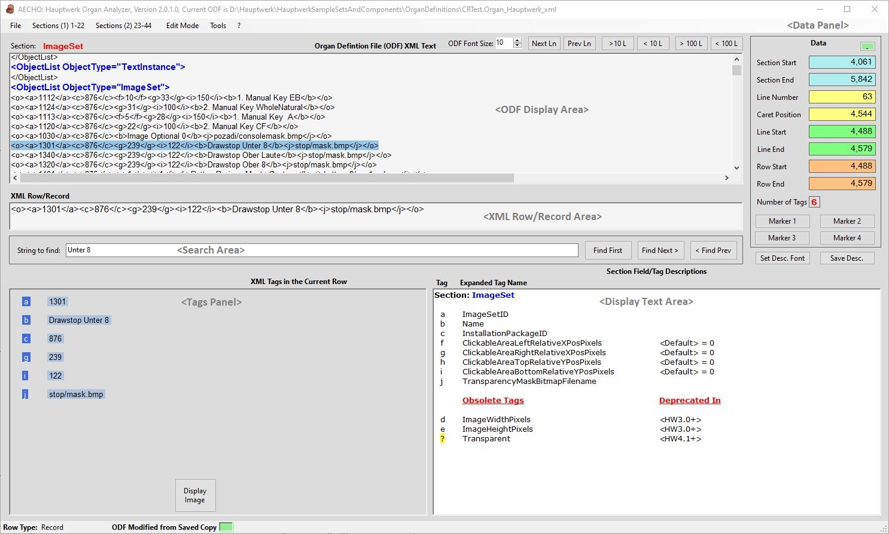

This area is a scrollable window into an ODF: opening an ODF
file loads its contents entirely into this area, without any
reformatting of the text layout. From here, any part of the ODF
can be viewed and/or edited. Vertical and Horizontal scroll-bars
provide for quick unstructured navigation around the text. Just
above the top-left edge of the area, AECHO displays the name of
the current Section, when a Row is selected. Along the right top
edge are controls to vary the presentation font size, and to
move the cursor position by 1, 10, or 100 Lines at a time in
either direction.
When a Row is selected within the ODF Display Area (most
commonly by double-clicking with the mouse while positioned
anywhere inside the Row), the entire text of that Row is copied
into this area. Note that some Record-Rows might consist of more
than a single Line of text, in which case all of the Lines will
be copied intact into this area, which can be scrolled.
This area allows the user to enter search text, and initiate a
search for the first instance of that text in the ODF, or the
next instance (forward search) from the current position, or the
previous instance (backwards search) from the current position.
When a Row is loaded into the XML Row/Record Area, and that
Row is of type "Record" (bounded by '<o>...</o>'
Tags), AECHO will present that Row in this Panel, separated into
its constituent Fields, and present each of those Fields
alongside their Values. If the Record carries a data element
pointing to an Image File, AECHO present the Display Image
button which will open and display that Image. If the Record is
a (sound) Sample, AECHO presents the Trace Sample
button to fully expand the Sample and linked Records from
several other Sections.
When positioned in an ODF Section (or a non-Section Header or
Trailer area), this area displays a definition of the Section's
Fields, listing all possible Field Tag in both their abbreviated
forms as seen in a Compressed-ODF, and their long forms as seen
in a Full-ODF. When the ODF specification defines a default
value that HW will assume when the Field is absent from a
Compressed-ODF, that value is displayed here.
Obsolete/Deprecated Tags are identified, based on the current
HW6.x ODF specification. This area is also used to display the
List of Sections when an ODF is first loaded (or upon demand),
and is a fallback for displaying a shortened version of the Help
Text if the HTML Help cannot be displayed. The formatted content
of this area can be submitted as a print-job to any printer
(physical or virtual) available on the system.
The Data Panel presents current position information about the
location of the cursor and/or the selected Row within the ODF.
The Line
Number, Caret Position, Line Start/End,
and Row
Start/End fields are updated when the cursor is
moved by a single-click, a double-click, a search, a Menu-Bar Sections
choice, or by a Next/Prev (1 / 10 / 100) Line
button. Additionally, when a Row is selected (a mouse
double-click, Menu-Bar Sections choice, or Next/Prev (1
/ 10 / 100) Line button), then the Section
Start/End and Number of Tags
fields are also updated. The eight colored position fields are
all active hotlinks back to the ODF - clicking on one of them
will position the cursor to that point. This panel also displays
the four Marker
buttons that create and position to bookmarks within an ODF.
Example:
The screenshot below is clickable, each area is linked to a
more detailed description of its use.

Main Window Area, with Hyperlinks to their
Detailed Descriptions